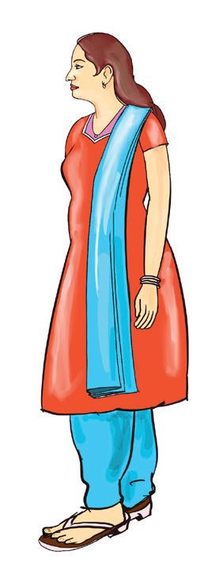
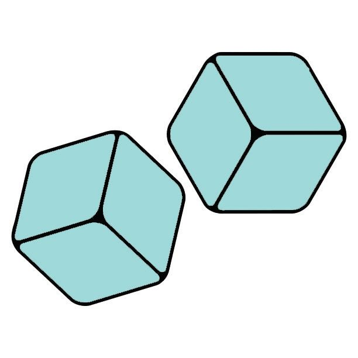
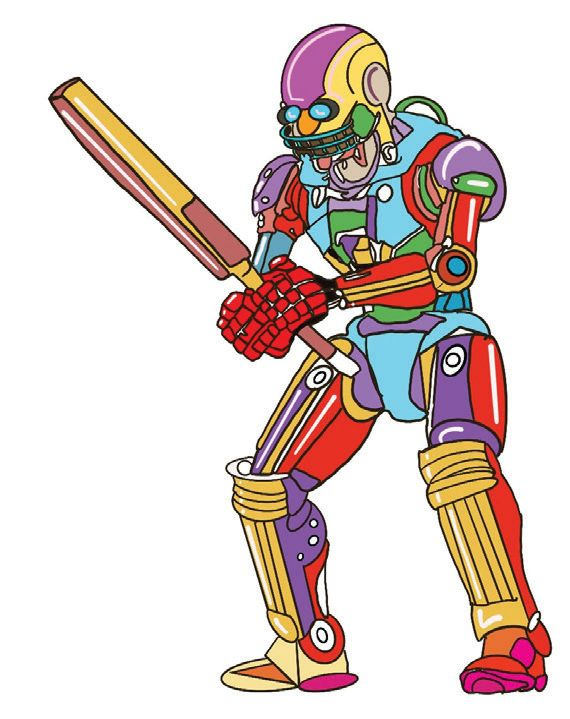

4 കൂടുന്ന കൂട്ടം
Page 47

Page 48


ഗണിതം സ്റ്റാൻഡേർഡ് - IV
വാതിൽ തുറക്കാം അച്ഛനും അമ്മയ്ക്കും ഒപ്പം ധ്വവനി ഗിച്ചോോ പാർക്കിൽ എത്തി. കൂടെ അനിയൻ ധനുവും ഉണ്ട്.
രണ്ട് ബട്ടൺ അമർത്തി തുക 1000 ആക്കിയാൽ വാതിൽ തുറക്കും
500 ഉം 10 ഉം ചേർന്ന സംഖ്യയ ഇവിടെ ഉണ്ടല്ലോോ. 490 ഉം 10 ഉം 500. പിന്നൊൊരു 500 ഉം മതിയല്ലോോ.
490
210
752
900
100
537
765
422
404
449
450
300
207
450
596
793
235
248
550
510
1000
48
100 ഉണ്ട്. ഇനി ഏതാണ് വേണ്ടത്?
Page 49


കൂടുന്ന കൂട്ടം
സംഖ്യാജോാടികൾ സംഖ്യാജോോടികൾ എഴുതാമോാ?
1000
1000
1000 100
490
1000
793
1000
1000
തുക ആയിരം തുക ആയിരം ആകുന്ന രീതിയിൽ പൂരിപ്പിക്കുക. 490 + 10 + 500 = 1000
800 + 100 + 100 = 1000
700 + 200 + 100 = ..........
490 + ........... = 1000
600 + 300 + 100 = .......... 793 + 7 + .......... = 1000
500 + 400 + ....... = 1000
400 + 300 + ....... = 1000
793 + .......... = 1000
551 + 9 + .......... = 1000
551 + .......... = 1000
600 + ...... + ....... = 1000 400 + ...... + ....... = 1000 500 + .......+ ....... = 1000
സംഖ്യാമാല പൂർത്തിയാക്കൂ 9000 10000
49
Page 50


ഗണിതം സ്റ്റാൻഡേർഡ് - IV
ഷൂട്ടിങ് കോോർണർ ഷൂട്ടിങ്ങിൽ പങ്കെടുത്ത് കിട്ടിയ പോായിന്റ് കണക്കാക്കി ഒരാളിന് മൂന്ന് ജയിച്ചത് ആരാണെന്ന് തവണ ഷൂട്ട് ചെയ്യാം. കണ്ടുപിടിക്കൂ...
100
363 250
900
475 750
525
ഓരോോരുത്തർക്കും കിട്ടിയ പോോയിന്റ് എത്രയാണെന്ന് എഴുതൂ. ധനു
: 100 + 900 + 525
=
ധ്വവനി
: 750 + 250 + ........
= 1475
മിനി മൂന്ന് തവണ ഷൂട്ട് ചെയ്തപ്പോോൾ കിട്ടിയ പോോയിന്റ് 1363 ആണ്. ഏതൊൊക്കെ സംഖ്യയയിലായിരിക്കും ഷൂട്ട് ചെയ്തിട്ടുള്ളത് ? 363
സുഹൈൽ മൂന്ന് തവണയും ഷൂട്ടുചെയ്തത് 363ൽ തന്നെയാണ്. കിട്ടിയ പോോയിന്റ് എത്രയാണ് ? 363 മൂന്ന്
തവണ കൂട്ടണം
300 ഉം 60 ഉം 3 ഉം മൂന്ന്
തവണ വീതം കൂട്ടിയാലും മതിയല്ലോോ
3ന്റെ ഇരട്ടി 6
3ന്റെ രണ്ട് മടങ്ങ് 6
50
പസിൽ കോർണർ ഞാനാര് ? ഞാൻ ഒരു മൂന്നക്ക സംഖ്യയയാണ്. എല്ലാം ഒരേ അക്കമാണ്. സംഖ്യയ 3 തവണ കൂട്ടി യതിനോോട് 1 കൂടി കൂട്ടിയപ്പോോൾ ഏറ്റവും ചെറിയ നാലക്ക സംഖ്യയ കിട്ടി. ഞാനാര് ?
Page 51

കൂടുന്ന കൂട്ടം
ഇങ്ങനെയും കൂട്ടാം •
363 മൂന്നുതവണ കൂട്ടുന്നത് എങ്ങനെ ? രീതി : 2 രീതി : 1 300 നെ 3 കൊൊണ്ട് ഗുണിച്ചാലോോ? ഇതുപോോലെ 60 നെയും 3 നെയും 3 കൊൊണ്ട് ഗുണിച്ച് എഴുതാം.
300 + 60 + 3 + 300 + 60 + 3 300 + 60 + 3
300 × 3 = 900 + 60 × 3 = 180 3 × 3 = 9 1089
900 + 180 + 9 900 + 100 + 89 = 1089
(3 × 3 × 100 = 900) (3 × 6 × 10 = 180)
• ലിനി ഷൂട്ട് ചെയ്തപ്പോോൾ 363, 475, 750 എന്നീ സംഖ്യയകളാണ് കിട്ടിയത്. ലിനിക്ക് എത്ര പോോയിന്റ് കിട്ടി ? 363 + 475 + 750 രീതി : 1 ഇങ്ങനെയും 363 + 475 = 300 + 60 + 3 + 400 + 70 + 5 = 300 + 400 + 60 + 70 + 3 + 5 = 700 + 130 + 8 = 830 + 8 = 838 838 + 750 = 800 + 30 + 8 + 700 + 50 = 800 + 700 + 30 + 50 + 8 = 1500 + 80 + 8 = 1588
രീതി : 2
363 + 475 + 750
300 + 60 + 3 400 + 70 + 5 700 + 50 1400 +180 + 8
കണക്കാക്കാം
363 + 475 838
838 + 750 1588
363 + 475 750 1588
1400 + 100 + 80 + 8 = 1500 + 88 = 1588
ഏറ്റവും കൂടുതൽ പോോയിന്റ് കിട്ടിയതാർക്ക് ? വിജയിയുടെ പേര് കുറവ് പോായിന്റിൽ നിന്ന് കൂടുതൽ പോായിന്റ് കിട്ടിയവരുടെ പേരുകൾ ക്രമത്തിലെഴുതൂ... , , , , 3 തവണ ഷൂട്ട് ചെയ്യുമ്പോോൾ ഒരാൾക്ക് കിട്ടാവുന്ന ഏറ്റവും കൂടിയ പോോയിന്റ് എത്രയാണ് ? 51
Page 52





ഗണിതം സ്റ്റാൻഡേർഡ് - IV
1089 ന്റെ കൗൗതുകം • • • • • •
തുടർച്ചയായ ഏതെങ്കിലും 3 അക്കങ്ങൾ എഴുതുക. ഇവയെല്ലാം ഉപയോോഗിച്ച് ഉണ്ടാക്കാവുന്ന ഏറ്റവും വലിയ മൂന്നക്കസംഖ്യയ എഴുതുക. ഏറ്റവും ചെറിയ മൂന്നക്കസംഖ്യയ എഴുതുക. സംഖ്യയകളുടെ വ്യയത്യാസം കാണുക. വ്യയത്യാസമായി കിട്ടിയ സംഖ്യയ തിരിച്ചെഴുതുക. രണ്ട് സംഖ്യയകളുംം തമ്മിൽ കൂട്ടുക.
ഏത് 3 അക്കങ്ങൾ എടുത്താലും ഈ ഉത്തരം തന്നെയാണോോ? ചെയ്തുനോോക്കൂ...
ഡൈസ് കോോർണർ ഡൈസ് നോോക്കൂ,
നാലക്കസംഖ്യയയുടെ ഡൈസ് ഒരു തവണയും മൂന്നക്കസംഖ്യയയുടെ ഡൈസ് ഒരു തവണയും എറിഞ്ഞു കിട്ടുന്ന സംഖ്യയകൾ തമ്മിൽ കൂട്ടണം.
നമുക്കും ഡൈസ് കളിച്ചാലോോ ?
341 343 2351
2349
251
5123
ധ്വവനി ഡൈസ് എറിഞ്ഞ് കിട്ടിയ സംഖ്യയകൾ 2349
52
251
ധ്വവനിക്ക് കിട്ടിയ പോോയിൻ്റ് 2349 ൻ്റെയും 251 ൻ്റെയും തുകയാണ്.
Page 53


കൂടുന്ന കൂട്ടം
ധ്വവനിക്ക് കിട്ടിയ പോോയിന്റ് • അച്ഛൻ തുക കണക്കാക്കിയ രീതി • അമ്മ കണക്കാക്കിയ രീതി 2349 + 251 = 2349 + 1 + 250
= 2350 + 250 = 2600
• ധനു കണക്കാക്കിയ രീതി 2349 + 251 = 2300 + 200 + 49 + 51 = 2500 + 100 = 2600
2349 + 251 = 2000 + 349 + 251 = 2000 + 350 + 250 = 2600
• ധ്വവനി കണക്കാക്കിയ രീതി 2349 + 251 = 2000 + 300 + 40 + 9 +
200 + 50 + 1
2000 + 500 + 90 + 10 = 2600
കൂട്ടലും കുറയ്ക്കലും ധനു ഡൈസ് എറിഞ്ഞ് കിട്ടിയ സംഖ്യയകൾ കൂട്ടി എഴുതിയത് നോോക്കൂ. ഏതൊൊക്കെ സംഖ്യയകളാണ് കിട്ടിയത് ? 9 1 235
0
5 44
5013 + ................... ................... + 343
= 5413
013
3102
434 343
= 4850
ഡൈസ് 1
ഡൈസ് 2
തുക
4450
400
2351
343 434
5123
5447 5357
2349
341
5013
251
5123
5
= 3445
................. + .................
234
341
234 400
251
പൂരിപ്പിക്കാം ............ ............ ............ ............
7050
5050
6050
53
Page 54


ഗണിതം സ്റ്റാൻഡേർഡ് - IV
സ്പോോർട്സ് കോോർണർ 1125 1190
325
2990
3050
980
920
3500
3600
ധനുവിന് ബാറ്റുംം ബോോളുംം ധ്വവനിക്ക് സൈക്കിളുംം വാങ്ങി. സൈക്കിളിന്റെ വില
അച്ഛന്റെ കൈയിൽ
ബാറ്റിന്റെയും ബോോളിന്റെയും വില
രൂപയാണുള്ളത്.
കടയിൽ കൊൊടുത്ത രൂപ
4000
അച്ഛൻ കടയിൽ കൊൊടുത്ത രൂപയെ ഏതൊൊക്കെ രീതിയിൽ നോോട്ടുകളുംം നാണയങ്ങളുമായി എഴുതാം. ഞാൻ കണക്കാക്കിയ രീതി
54
ചങ്ങാതി കണക്കാക്കിയ രീതി
Page 55


കൂടുന്ന കൂട്ടം
മാജിക് കോോർണർ ഹായ്... മാജിക് !
വരൂ... മാജിക്കിൽ പങ്കെടുക്കാം. നിർദേശങ്ങൾ ഞാൻ പറയാം
നിർദേശങ്ങൾ • • • • • • •
നിങ്ങൾ ഒരുനാലക്ക സംഖ്യയ എഴുതണം. ഞാൻ ഒരു സംഖ്യയ എഴുതി പെട്ടിയിൽ ഇടുംം. അതിനുശേഷം നിങ്ങൾ എഴുതിയ സംഖ്യയക്ക് താഴെ ഞാനൊൊരു സംഖ്യയ എഴുതും. വീണ്ടും നിങ്ങൾക്ക് ഒരുനാലക്ക സംഖ്യയ എഴുതാം. അതിനുതാഴെ ഞാനുമൊൊരു നാലക്ക സംഖ്യയ എഴുതും. ഈ നാല് നാലക്കസംഖ്യയകളുടെ തുക നിങ്ങൾ കണക്കാക്കണം. ശേഷം ഞാൻ എഴുതി പെട്ടിയിലിട്ട സംഖ്യയ കാണിച്ചുതരുംം.
ധനു എഴുതിയ സംഖ്യയ
- 4325
മാന്ത്രികൻ എഴുതിയ സംഖ്യയ - 5674 ധനു എഴുതിയ സംഖ്യയ
- 1408
മാന്ത്രികൻ എഴുതിയ സംഖ്യയ - 8591
മാന്ത്രികൻ കടലാസിൽ എഴുതി പെട്ടിയിലിട്ട സംഖ്യയയും തുകയും നോോക്കൂ... എന്ത് മനസ്സിലായി ?
തുക ഞാൻ കണ്ടുപിടിച്ചത്
20000 ത്തേക്കാൾ 2 കുറവായ സംഖ്യയയല്ലേയിത് ?
55
Page 56


ഗണിതം സ്റ്റാൻഡേർഡ് - IV
ഫോോട്ടോോ കോോർണർ ധ്വവനിയും ധനുവും ഫോോട്ടോോ കോോർണറിൽ എത്തി ഫോോട്ടോോയെടുത്തു. സംഖ്യാശലഭത്തിലെ സംഖ്യയകളെ അക്കങ്ങളുടെ ക്രമം തിരിച്ചെഴുതി കൂട്ടി നോോക്കൂ...
4123
2321
32
31
21
41
23
4
14
2 00
ധനു തിരഞ്ഞെടുത്ത സംഖ്യയ 4123
ക്രമം തിരിച്ചെഴുതിയ സംഖ്യയ 3214
ധനു കണക്കാക്കിയ രീതി ധ്വവനി എടുത്ത സംഖ്യയ= 4002 4123 = 4000 + 100 + 20 + 3
തിരിച്ചെഴുതിയ സംഖ്യയ = ........
3214 = 3000 + 200 + 10 + 4
തുക = ........
7000 + 300 + 30 + 7 = 7337
എങ്ങനെയാണ് കൂട്ടുന്നത് ?
56
4123 + 3214 = 7337
Page 57


കൂടുന്ന കൂട്ടം
ഉത്തരപ്പൂക്കൾ സംഖ്യാശലഭത്തിലെ സംഖ്യയകൾ ക്രമം തിരിച്ചെഴുതി കൂട്ടിയപ്പോാൾ കിട്ടിയ ഉത്തരപ്പൂക്കൾക്ക് നിറം കൊാടുക്കൂ...
ഇരുവഴി സംഖ്യയകൾ 8 844
6446 3553
533
5
7337
ഇടത്തുനിന്നും വലത്തുനിന്നും ഒരേ പോോലെ വായിക്കാൻ കഴിയുന്ന സംഖ്യയകളാണ് ഇരുവഴി സംഖ്യയകൾ.
455
4
2112
എല്ലാ നാലക്കസംഖ്യയകളുംം ക്രമം തിരിച്ചെഴുതി കൂട്ടിയാൽ ഇരുവഴി സംഖ്യയകൾ കിട്ടുമോോ? കണ്ടുപിടിച്ച കാര്യയങ്ങൾ നോോട്ടു ബുക്കിൽ എഴുതൂ.
6006
തുക കണക്കാക്കാം
2357 + 7532
5104 + 8432 + 4015 1569
6018 + 3294
3519 + 8482
57
Page 58


ഗണിതം സ്റ്റാൻഡേർഡ് - IV
ഗെയിം കോോർണർ ധനുവും ധ്വവനിയും കമ്പ്യൂട്ടറിൽ കാറോോട്ട മത്സരം കളിക്കുകയാണ്. കളിയിൽ പങ്കെടുത്തവരുടെ പോോയിന്റുകൾ നോോക്കൂ. കിട്ടിയ പോോയിന്റുകൾ റൗണ്ട്
റൗണ്ട്
ധനു
2143
1457
ധ്വവനി
1148
2067
നന്മ
1654
1188
മിനി
1876
1124
പേര്
1
2
ധനുവിന് ആകെ എത്ര പോോയിന്റ് കിട്ടി?
രീതി - 1
രീതി - 2
2143 + 1457
2143 + 1457
2143 + 1000 = 3143
2143
= 2000 + 100 + 40 + 3
3143 + 400 = 3543
1457
= 1000 + 400 + 50 + 7
3543 +
50 = 3593
3000 + 500 + 90 + 10
3593 +
7 = 3600
= 3500 + 100 = 3600
ഇങ്ങനെയും എഴുതാം 2143 + 1457 3600
കാറോോട്ട മത്സരത്തിൽ 3000 ത്തിൽ കൂടുതൽ പോോയിന്റ് കിട്ടിയത് ആർ ക്കൊൊക്കെയാണ് ? ഊഹം എഴുതൂ...
58
Page 59


കൂടുന്ന കൂട്ടം
ഊഹിച്ചത് ശരിയാണോോ? കിട്ടിയ പോോയിന്റുകൾ റൗണ്ട് - 1
റൗണ്ട് - 2
ആകെ പോോയിന്റ്
ധനു
2143
1457
3600
ധ്വവനി
1148
2067
നന്മ
1654
1188
മിനി
1876
1124
പേര്
ആദായ വില്പന നോോട്ടീസ് നോോക്കൂ. ആദായവില 7200 രൂപ
2499 രൂപ
6500 രൂപ
9999 രൂപ 3800 രൂപ
5500 രൂപ
ധ്വവനിയുടെ വീട്ടിലേക്ക് കട്ടിലും ടിവിയും വാങ്ങാൻ എത്ര രൂപയാകും? ടി.വിയും അലമാരയും വാങ്ങാൻ എത്ര രൂപ വേണം? വാഷിങ് മെഷീനും കട്ടിലും വാങ്ങണമെങ്കിൽ എത്ര രൂപയാകും? കടയിൽ നിന്നും ഒരു സാധനം വാങ്ങി. നൂറെണ്ണമുള്ള 100 ന്റെ ഒരു കെട്ട് നോോട്ട് കൊൊടുത്തു. ബാക്കി ഒരു രൂപ കിട്ടി. വാങ്ങിയത് എന്താണ് ?
5999 രൂപ
നിങ്ങളുടെ കൈയിൽ 12000 രൂപയുണ്ടെങ്കിൽ ഏതൊൊക്കെ സാധനങ്ങ
ളാകും വാങ്ങുക ? കാരണം എഴുതുക.
59
Page 60




ഗണിതം സ്റ്റാൻഡേർഡ് - IV
ബാറ്റിങ് കോോർണർ ധനുവും ധ്വവനിയും ബാറ്റിങ് കോോർണറിൽ എത്തി. ഒരാൾക്ക് മൂന്ന് ഓവർ ബാറ്റ് ചെയ്യാം. ഓരോോ ഓവർ കഴിയുമ്പോാഴുംം പോോയിന്റ് കിട്ടുംം. കളിക്കു ശേഷം കിട്ടിയ പോോയിന്റ് നോോക്കൂ... 2343
ധനു
2344
1465
ധ്വവനി
3555
2600
3657 2279
ജിൻസി
3346
സമ്മാനം ആകെ പോോയിന്റ് 7000 ത്തിൽ കൂടുതലായാൽ ഡ്രാഗൺ ട്രെയിൻ ടിക്കറ്റ് സമ്മാനം
1592
പോോയിന്റ് നില പേര്
കിട്ടിയ പോോയിന്റ്
ധനു ജിൻസി ധ്വവനി ഡ്രാഗൺ ട്രെയിൻ ടിക്കറ്റ് കിട്ടിയത് ആർക്കൊൊക്കെ? കണ്ടുപിടിച്ച് എഴുതൂ.
60
ആകെ
Page 61


കൂടുന്ന കൂട്ടം
(1) തുക കണക്കാക്കി ഒഴിഞ്ഞ കളങ്ങളിൽ എഴുതൂ... A എന്ന കളത്തിലെ സംഖ്യയകിട്ടാൻ 2850 +1400 കണക്കാക്കണം.
2850
A
1400
A = ........... B = ........... C = ...........
B
C
D
D = ........... E = ...........
1875
3650
E
(2) അടുത്ത 5 സംഖ്യയകൾ എഴുതുക 4100, 5100, 6100, .............., .............., .............., .............., ..............
2352, 2852, 3332 , .............., .............., .............., .............., ..............
1000, 2111, 3222, .............., .............., .............., .............., ..............
2839, 3748, 4657, .............., .............., .............., .............., ..............
(3) ഒഴിഞ്ഞ കളത്തിലെ സംഖ്യയ എന്താണ് ?
(A) 3000
(B) 2400
1500
1750
?
2050
(C) 2300
(D) 2150
61
Page 62

ഗണിതം സ്റ്റാൻഡേർഡ് - IV
(4) ഷൂട്ടിങ് ബോോർഡ് കണ്ടല്ലോോ. താഴെ തന്നിട്ടുള്ള ചോോദ്യയങ്ങൾക്ക്
ഉത്തരം എഴുതുക.
1 10 100 1000
• എല്ലാ കളത്തിലും ഒരു തവണ വീതം ഷൂട്ട് ചെയ്ത് കൊൊള്ളിച്ചാൽ എത്ര പോോയിന്റ് കിട്ടുംം? • ധ്വവനി 3 തവണ 1000 ത്തിന്റെയും 2 തവണ 10 ന്റെയും കളത്തിൽ ഷൂട്ട് ചെയ്തു. എത്ര പോോയിന്റ് കിട്ടി ? • ധനു 10 തവണ ഷൂട്ട് ചെയ്തപ്പോോൾ കിട്ടിയ സംഖ്യയ 5140 ആണ്. ഏതൊൊക്കെ കളങ്ങളിൽ എത്ര തവണ ഷൂട്ട് ചെയ്ത് കൊൊള്ളിച്ചു? • 10 തവണ ഷൂട്ട് ചെയ്തപ്പോോൾ കിട്ടിയ പോോയിന്റ് താഴെ തന്നിരിക്കുന്ന തിൽ ഏതാണ് ? (A) 5142,
(B) 6280,
(C) 4510,
(D) 1245
• ഒരാൾ കുറെ തവണ ഷൂട്ട് ചെയ്തപ്പോോൾ 3333 കിട്ടി. കുറഞ്ഞത് എത്ര തവണ ഷൂട്ട് ചെയ്തിട്ടുണ്ടാകും?
62